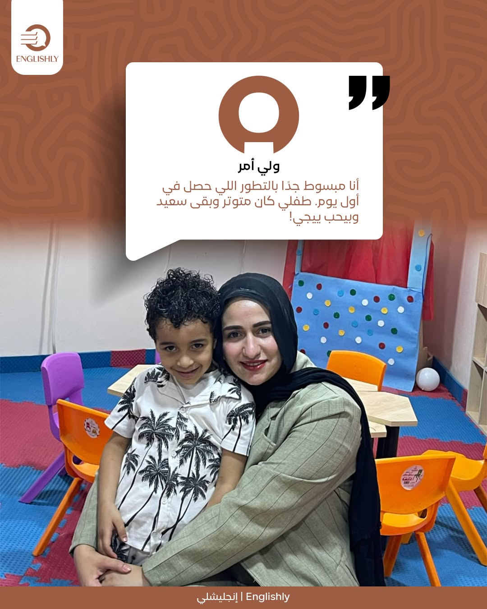
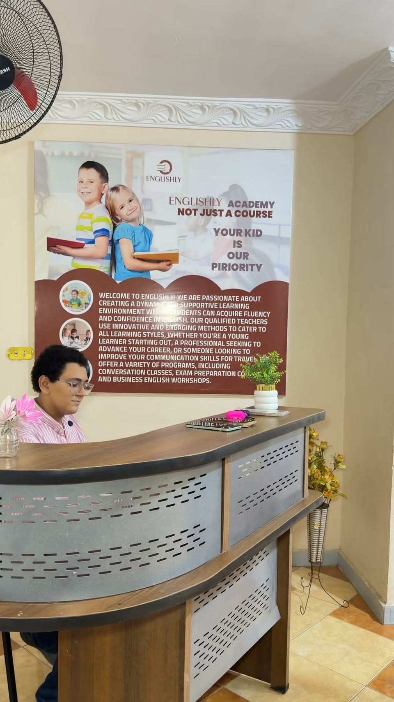

Learner first
Age, starting point, and purpose shape the route. The same program cannot serve every learner in the same way.
More than a course
From a child's first words to university and the workplace, every Englishly program starts with the learner's age, current level, and goal.
Our point of view
How we think
Memorizing rules alone does not create a confident speaker. The experience begins with the learner: a child who needs safety and curiosity, a teen who needs room to express ideas, or an adult preparing for study or work.
What shapes the experience?
Every stage should leave the learner better able to understand, respond, and speak with purpose—not simply finish another level.
Age, starting point, and purpose shape the route. The same program cannot serve every learner in the same way.
Vocabulary and grammar become useful when learners apply them in conversations, questions, presentations, and real situations.
Progress also means speaking, asking questions, and presenting ideas with greater clarity.
Inside the experience
Three glimpses of the journey: a child settling in, a student sharing his experience, and the branch where a new start happens.

A real Englishly story about safety and belonging at the beginning of learning.

Before the first class
You do not need to choose a course first. Tell us the learner's age, goal, and nearest branch; the team will help map the next step.
Start your assessmentIdentify the most relevant learning stage and experience.
Foundation, conversation, study, university, or career.
A clear starting point helps the team recommend a suitable path.
The branch confirms current schedules and availability directly.
Start where you are
Contact the team to discuss the best option and current availability at your nearest branch.